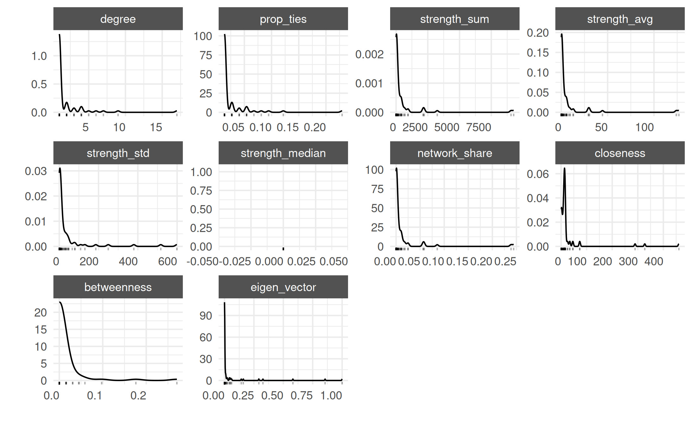
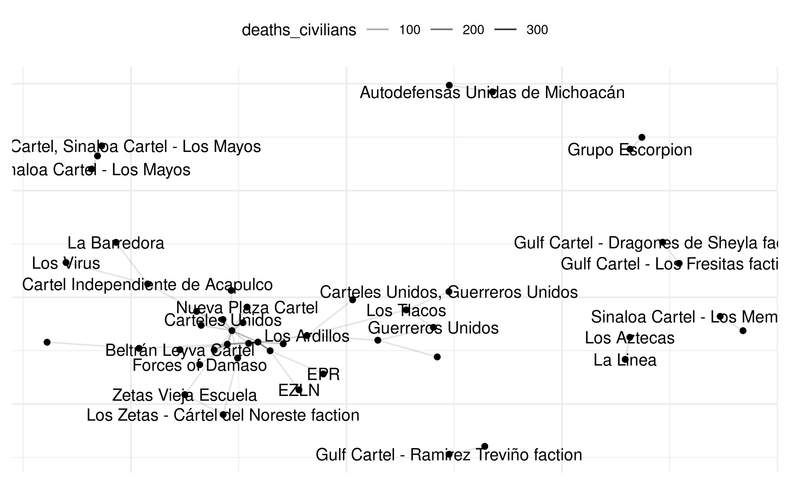
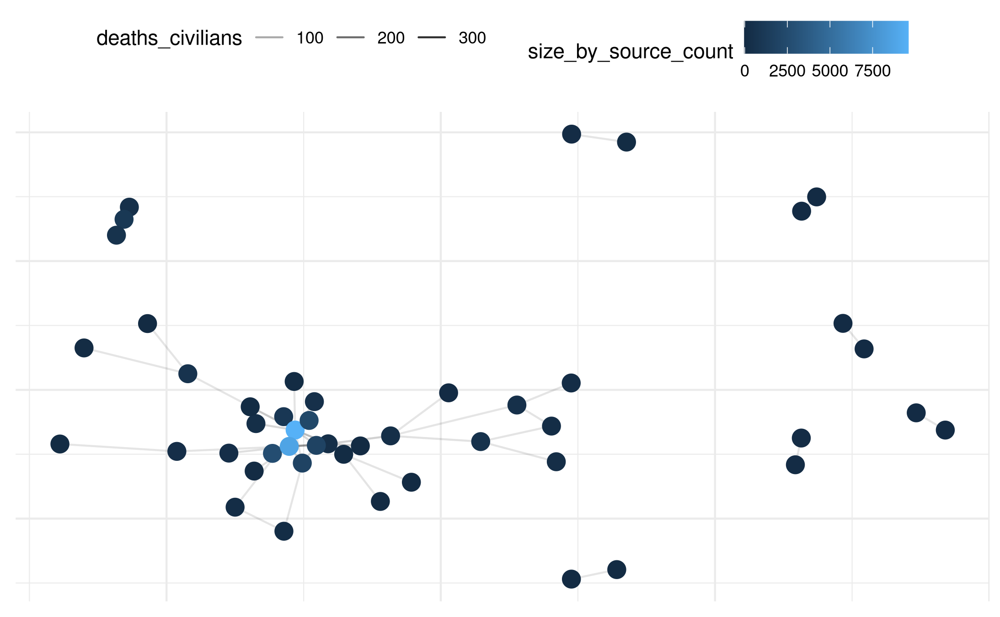
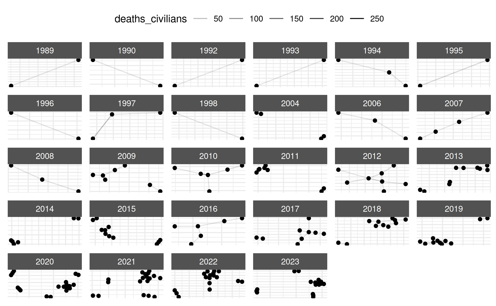
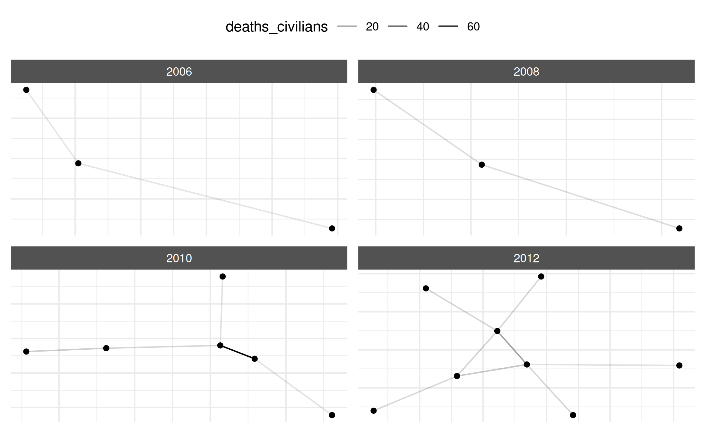

Netify: Workshop PSSI
Dorff, Keltner, Minhas
2025-06-12
Source:vignettes/PSSI_workshop_final.Rmd
PSSI_workshop_final.RmdNetify Workshop PSSI
Below is a demonstration of how to use the netify R package to build and analyze various conflict networks. We will walk through data preparation, network construction, summary statistics, visualizations, and special use cases like weighted networks, longitudinal networks, and bipartite networks.
Setup
This section checks for necessary packages and installs them if they are missing. We also load the netify package from GitHub.
# Load netify
library(netify)
# Check/install additional packages for the vignette
if(!'tidyverse' %in% rownames(installed.packages())){
install.packages('tidyverse', repos='https://cloud.r-project.org') }
# Load other libraries needed
library(tidyverse)## ── Attaching core tidyverse packages ──────────────────────── tidyverse 2.0.0 ──
## ✔ dplyr 1.1.4 ✔ readr 2.1.5
## ✔ forcats 1.0.0 ✔ stringr 1.5.1
## ✔ ggplot2 3.5.2 ✔ tibble 3.3.0
## ✔ lubridate 1.9.4 ✔ tidyr 1.3.1
## ✔ purrr 1.0.4
## ── Conflicts ────────────────────────────────────────── tidyverse_conflicts() ──
## ✖ dplyr::filter() masks stats::filter()
## ✖ dplyr::lag() masks stats::lag()
## ℹ Use the conflicted package (<http://conflicted.r-lib.org/>) to force all conflicts to become errorsCase Examples Using UCDP GED
We will use the UCDP GED data to demonstrate netify. Specifically, we’ll look at conflict events in Mexico and Myanmar (Burma).
1. Basic Aggregated Network (Mexican Case)
We first import the GED dataset, filter for Mexico, and construct a simple network (unweighted) based on the number of conflict events between actors.
# Load UCDP GED data on Mexico
data(mexico)
# Construct unweighted network (number_of_events by default)
mex_network <- netify(
mexico,
actor1 = 'side_a',
actor2 = 'side_b',
symmetric = TRUE,
sum_dyads = TRUE,
diag_to_NA = TRUE,
missing_to_zero = TRUE
)## ! Warning: there are repeating dyads within time periods in the dataset. When `sum_dyads = TRUE` and `weight` is not supplied, edges in the outputted adjacency matrix represent a count of interactions between actors.
mex_network_log <- transform_weights(
mex_network,
transform_fn = log,
add_constant = 1, # Add 1 before log to handle zeros
new_name = "log_events"
)
mex_bin <- transform_weights(
mex_network,
transform_fn = function(x) ifelse(x > 0, 1, 0),
new_name = "conflict_present")## ℹ network has been binarized through transformation
# Summaries at the graph and actor levels
summary(mex_network)## num_actors density num_edges prop_edges_missing mean_edge_weight
## 1 74 0.02520088 138 0 7.018512
## sd_edge_weight median_edge_weight min_edge_weight max_edge_weight competition
## 1 113.395 0 0 3757 0.1371326
## sd_of_actor_means transitivity
## 1 21.37264 0.1046512
actor_stats <- summary_actor(mex_network)
plot_actor_stats(actor_stats)
# Visualize the network
plot(mex_network, add_text = TRUE)## Warning: Removed 69 rows containing missing values or values outside the scale range
## (`geom_segment()`).
# Show a subset of 10 random actor names for clarity
select_names <- rownames(mex_network)
set.seed(12345)
random_indices <- sample(length(select_names), 10)
random_names <- select_names[random_indices]
plot(mex_network,
select_text = random_names,
select_text_display = random_names)## Warning: Removed 69 rows containing missing values or values outside the scale range
## (`geom_segment()`).## Warning: Removed 64 rows containing missing values or values outside the scale range
## (`geom_text()`).
plot(mex_network,
select_text = random_names,
select_text_display = random_names,
# log(x+1) to better see range of connects
weight_transform = log1p
)## Warning: Removed 69 rows containing missing values or values outside the scale range
## (`geom_segment()`).
## Removed 64 rows containing missing values or values outside the scale range
## (`geom_text()`).
# break p2 into pieces
comp <- plot(
mex_network,
remove_isolates = TRUE,
select_text = random_names,
select_text_display = random_names,
weight_transform = log1p,
return_components = TRUE
)
# Basic usage - just edges
comp$base +
netify_edge(comp) +
labs(alpha='Log(Event Count)') +
reset_scales() +
netify_node(comp) +
netify_text(comp) +
comp$theme## Warning: Removed 69 rows containing missing values or values outside the scale range
## (`geom_segment()`).
## Removed 64 rows containing missing values or values outside the scale range
## (`geom_text()`).
# and even simpler
plot(mex_network,
weight_transform = log1p,
edge_alpha_label = "Log(Event Count)",
select_text = random_names,
select_text_display = random_names)## Warning: Removed 69 rows containing missing values or values outside the scale range
## (`geom_segment()`).
## Removed 64 rows containing missing values or values outside the scale range
## (`geom_text()`).
# add degree centrality
mex_network = add_node_vars(
mex_network,
summary_actor(mex_network),
actor='actor' )
#
plot(mex_network,
weight_transform = log1p,
edge_alpha_label = "Log(Event Count)",
point_size_var='degree',
point_size_label='Degree',
point_alpha=.5
# select_text = random_names,
# select_text_display = random_names,
# check_overlap=TRUE
)## Warning: Removed 69 rows containing missing values or values outside the scale range
## (`geom_segment()`).2. Weighted Network (Mexican Case)
Next, we create a weighted network using the civilian deaths variable.
# Weighted by civilian deaths
mex_network_civ <- netify(
mexico,
actor1 = 'side_a',
actor2 = 'side_b',
weight = 'deaths_civilians',
symmetric = TRUE,
sum_dyads = TRUE,
diag_to_NA = TRUE,
missing_to_zero = TRUE
)
# Summaries and visualization
summary(mex_network_civ)## num_actors density num_edges prop_edges_missing mean_edge_weight
## 1 74 0.01680058 92 0 0.4813032
## sd_edge_weight median_edge_weight min_edge_weight max_edge_weight competition
## 1 8.809874 0 0 380 0.159834
## sd_of_actor_means transitivity
## 1 1.594563 0.1458333
plot(mex_network_civ, add_text = TRUE)## Warning: Removed 46 rows containing missing values or values outside the scale range
## (`geom_segment()`).
# Subset of labels for clarity
plot(mex_network_civ,
select_text = random_names,
select_text_display = random_names)## Warning: Removed 46 rows containing missing values or values outside the scale range
## (`geom_segment()`).## Warning: Removed 40 rows containing missing values or values outside the scale range
## (`geom_text()`).
# Example: community detection (optimal clustering)
i_opt_memb <- function(x){
ig <- netify_to_igraph(x)
memb <- igraph::cluster_optimal(ig)$membership
return(memb)
}
sum_mex <- summary_actor(
mex_network_civ,
other_stats = list(i_opt_memb = i_opt_memb)
)
# Example: add nodal-level data (e.g., number_of_sources)
size_by_source_count <- mexico |>
pivot_longer(cols = c(side_a, side_b),
names_to = "actor_type",
values_to = "actor") |>
group_by(actor) |>
summarize(size_by_source_count = sum(number_of_sources, na.rm = TRUE)) |>
ungroup()
mex_network_civ <- add_node_vars(
netlet = mex_network_civ,
node_data = size_by_source_count,
actor = 'actor',
node_vars = c('size_by_source_count')
)
# Plot with color and size based on external data
plot(mex_network_civ,
point_color_var = 'size_by_source_count',
point_size=4
)## Warning: Removed 46 rows containing missing values or values outside the scale range
## (`geom_segment()`).
# Filter large nodes for labeling
large_nodes <- size_by_source_count |>
filter(size_by_source_count >= 1000) |>
select(actor) |> unlist()
plot(
mex_network_civ,
point_color_var = 'size_by_source_count',
point_size=4,
select_text = large_nodes,
select_text_display = large_nodes
)## Warning: Removed 46 rows containing missing values or values outside the scale range
## (`geom_segment()`).
## Removed 40 rows containing missing values or values outside the scale range
## (`geom_text()`).
3. Longitudinal Network (Mexican Case)
We can also create time-varying networks. Here, we use the year field to construct a series of networks.
# Create a time-varying network
mex_network_long <- netify(
mexico,
actor1 = 'side_a',
actor2 = 'side_b',
time = 'year',
weight = 'deaths_civilians',
symmetric = TRUE,
sum_dyads = TRUE,
diag_to_NA = TRUE,
missing_to_zero = TRUE
)
# Summaries over time at actor level
summary_actor_mex <- summary_actor(mex_network_long)
# Look at distribution of actor stats
plot_actor_stats(summary_actor_mex, across_actor = TRUE)## Picking joint bandwidth of 0.199## Picking joint bandwidth of 0.0277## Picking joint bandwidth of 1.85## Picking joint bandwidth of 0.0503## Picking joint bandwidth of 0.202## Picking joint bandwidth of 0.381## Picking joint bandwidth of 0.0238## Picking joint bandwidth of 1.17## Picking joint bandwidth of 0.127## Picking joint bandwidth of 0.0786## Warning: Removed 2169 rows containing non-finite outside the scale range
## (`stat_density_ridges()`).
# Focus on closeness measure
plot_actor_stats(summary_actor_mex,
across_actor = TRUE,
specific_stats = 'closeness')## Picking joint bandwidth of 1.17## Warning: Removed 2021 rows containing non-finite outside the scale range
## (`stat_density_ridges()`).
# Visualize
plot.netify(mex_network_long,
static_actor_positions = FALSE,
remove_isolates = TRUE)## Warning: Removed 161 rows containing missing values or values outside the scale range
## (`geom_segment()`).
# Example: subset for selected years
mex_network_short <- subset_netify(mex_network_long,
time = c("2006", "2008",
"2010", "2012"))
mex_network_short## ✔ Hello, you have created network data, yay!
## • Unipartite
## • Symmetric
## • Sum of Weights from `deaths_civilians`
## • Longitudinal: 4 Periods
## • # Unique Actors: 74
## Network Summary Statistics (averaged across time):
## dens miss mean trans
## deaths_civilians 0.002 0 0.016 0.05
## • Nodal Features: None
## • Dyad Features: None
plot(mex_network_short)## Warning: Removed 17 rows containing missing values or values outside the scale range
## (`geom_segment()`).
Myanmar UCDP GED Dataset
Let’s now repeat similar steps for conflict data in Myanmar (Burma).
# UCDP data for Myanmar
data(myanmar)
# Create basic network
my_network <- netify(
myanmar,
actor1 = 'side_a',
actor2 = 'side_b',
symmetric = TRUE,
sum_dyads = TRUE,
diag_to_NA = TRUE,
missing_to_zero = TRUE
)## ! Warning: there are repeating dyads within time periods in the dataset. When `sum_dyads = TRUE` and `weight` is not supplied, edges in the outputted adjacency matrix represent a count of interactions between actors.
summary(my_network)## num_actors density num_edges prop_edges_missing mean_edge_weight
## 1 27 0.07956104 58 0 21.00855
## sd_edge_weight median_edge_weight min_edge_weight max_edge_weight competition
## 1 183.2769 0 0 2535 0.2944592
## sd_of_actor_means transitivity
## 1 56.44117 0.06637168
# Weighted by civilian deaths
my_network_civ <- netify(
myanmar,
actor1 = 'side_a',
actor2 = 'side_b',
weight = 'deaths_civilians',
symmetric = TRUE,
sum_dyads = TRUE,
diag_to_NA = TRUE,
missing_to_zero = TRUE
)
# Plot with labels
plot(my_network_civ, add_text = TRUE)## Warning: Removed 22 rows containing missing values or values outside the scale range
## (`geom_segment()`).
Adding Nodal Attributes (Myanmar Case)
We define various attribute categories (government, non-government, ethnic/ideological, armed, etc.) and add those as node-level data.
# Define actor categories
gov_actors <- c("Government of Myanmar (Burma)", "BMA", "NUG")
nongov_actors <- c(
"KNU", "MTA", "DKBA", "MDA", "RCSS", "Buddhists (Myanmar)", "ARSA",
"Civilians", "KNPP", "KIO", "RSO", "UWSA", "NMSP", "ABSDF", "NSCN-K",
"PSLF", "God's Army", "MDA - LM", "CNF", "Muslims (Myanmar)", "SSPP",
"DKBA 5", "MNDAA", "ULA"
)
ethnic_actors <- c(
"KNU", "RCSS", "KIO", "UWSA", "NMSP", "KNPP", "NSCN-K", "CNF", "PSLF", "SSPP",
"MTA", "DKBA", "MDA", "RSO", "God's Army", "MDA - LM", "DKBA 5", "MNDAA", "ULA"
)
ideological_actors <- c(
"Government of Myanmar (Burma)", "NUG", "ARSA", "ABSDF", "Civilians",
"Buddhists (Myanmar)", "Muslims (Myanmar)", "BMA"
)
armed_actors <- c(
"KNU", "MTA", "DKBA", "MDA", "RCSS", "ARSA", "NMSP", "KNPP", "KIO", "RSO",
"UWSA", "ABSDF", "NSCN-K", "PSLF", "God's Army", "DKBA 5", "MNDAA", "ULA",
"CNF", "SSPP", "NUG", "MDA - LM"
)
non_armed_actors <- c(
"Government of Myanmar (Burma)", "BMA", "Civilians",
"Buddhists (Myanmar)", "Muslims (Myanmar)"
)
# Create a data frame for nodal attributes
actors <- unique(c(myanmar$side_a, myanmar$side_b))
node_data <- data.frame(
actor = actors,
gov_or_nongov = ifelse(actors %in% gov_actors, 1,
ifelse(actors %in% nongov_actors, 0, NA)),
ethnic_or_ideological = ifelse(actors %in% ethnic_actors, 1,
ifelse(actors %in% ideological_actors, 0, NA)),
armed_or_not = ifelse(actors %in% armed_actors, 1,
ifelse(actors %in% non_armed_actors, 0, NA))
)
node_data <- node_data |> mutate_all(as.factor)
# Add these attributes to the network
my_network_civ <- add_node_vars(my_network_civ,
node_data = node_data,
actor = 'actor',
node_vars = 'gov_or_nongov')
my_network_civ <- add_node_vars(my_network_civ,
node_data = node_data,
actor = 'actor',
node_vars = 'ethnic_or_ideological')
my_network_civ <- add_node_vars(my_network_civ,
node_data = node_data,
actor = 'actor',
node_vars = 'armed_or_not')
# Plot with different color encoding
plot(
my_network_civ,
title = "Myanmar Network",
point_color_var = "gov_or_nongov",
layout = "circle",
add_text = TRUE
)## Warning: Removed 22 rows containing missing values or values outside the scale range
## (`geom_segment()`).
plot(
my_network_civ,
title = "Myanmar Network",
point_color_var = "ethnic_or_ideological",
layout = "circle",
add_text = TRUE
)## Warning: Removed 22 rows containing missing values or values outside the scale range
## (`geom_segment()`).
Bipartite Network (Myanmar Case)
Finally, we illustrate a bipartite network example, focusing on interactions between Buddhist and Christian actors in Myanmar.
# Define actors by religion
buddhist_actors <- c("PSLF", "DKBA", "God's Army", "Government of Myanmar (Burma)")
christian_actors <- c("KNU", "KNPP", "KIO", "MDA", "NSCN-K", "CNF")
selected_actors <- c(buddhist_actors, christian_actors)
# Subset data for only these actors
myanmar_bipartite <- subset(myanmar,
side_a %in% selected_actors & side_b %in% selected_actors)
if (nrow(myanmar_bipartite) == 0) {
stop("No data for the specified Buddhist-Christian interactions.")
}
# Tag each side as Buddhist or Christian
myanmar_bipartite$actor_type_a <- ifelse(
myanmar_bipartite$side_a %in% buddhist_actors, "Buddhist", "Christian")
myanmar_bipartite$actor_type_b <- ifelse(
myanmar_bipartite$side_b %in% buddhist_actors, "Buddhist", "Christian")
# Construct bipartite network
bipartite_network <- netify(
myanmar_bipartite,
actor1 = 'side_a',
actor2 = 'side_b',
mode = 'bipartite',
weight = 'deaths_civilians',
symmetric = FALSE,
sum_dyads = TRUE,
diag_to_NA = TRUE,
missing_to_zero = TRUE
)
# Plot bipartite network
plot(
bipartite_network,
title = "Bipartite Network: Buddhist vs Christian Actors in Myanmar",
add_text = TRUE,
layout = "bipartite"
)
Conclusion
In this vignette, we explored how to install and use netify to create different types of conflict networks (unweighted, weighted, longitudinal, bipartite), how to summarize and visualize them, and how to incorporate additional node attributes for deeper analysis.
For more details on netify, consult the package documentation and function help files.